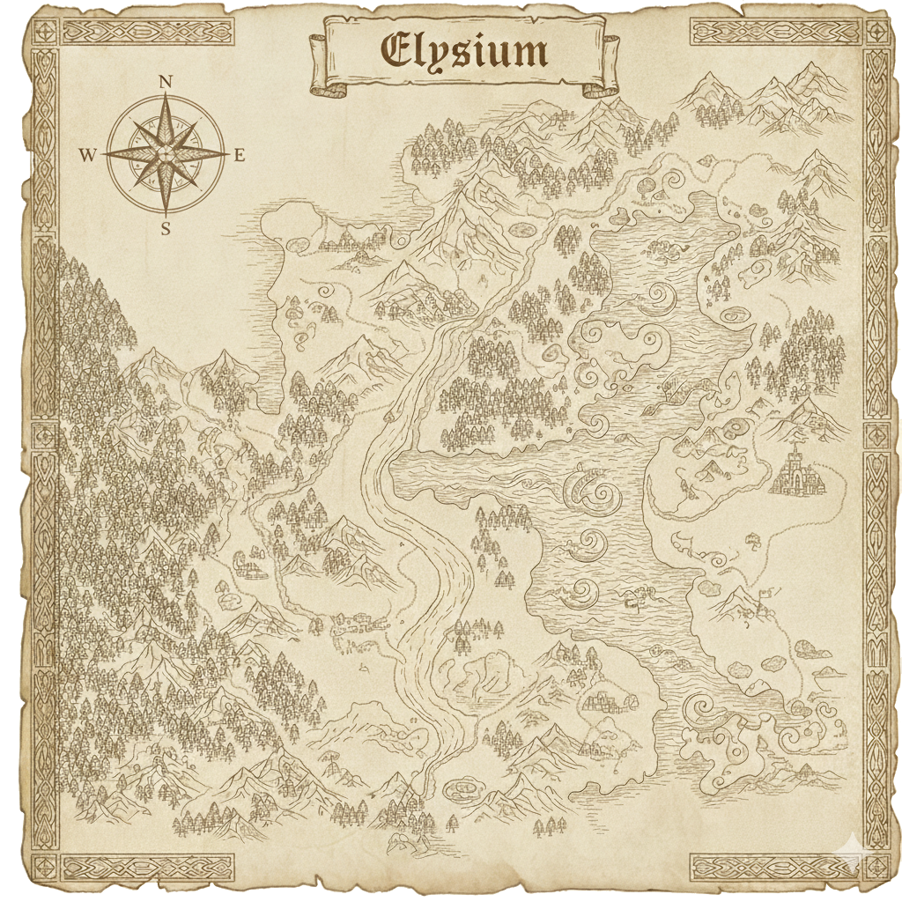
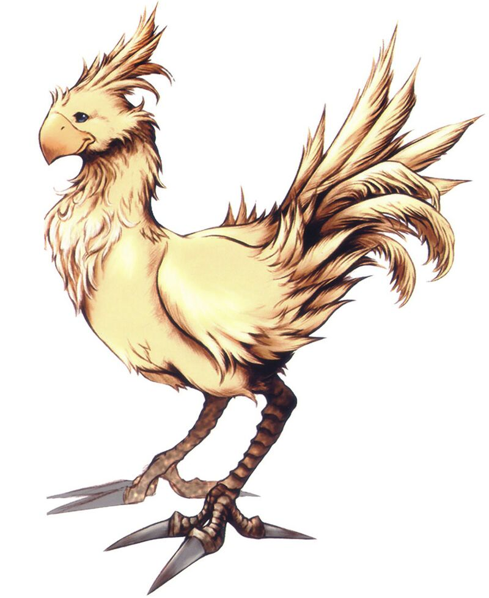
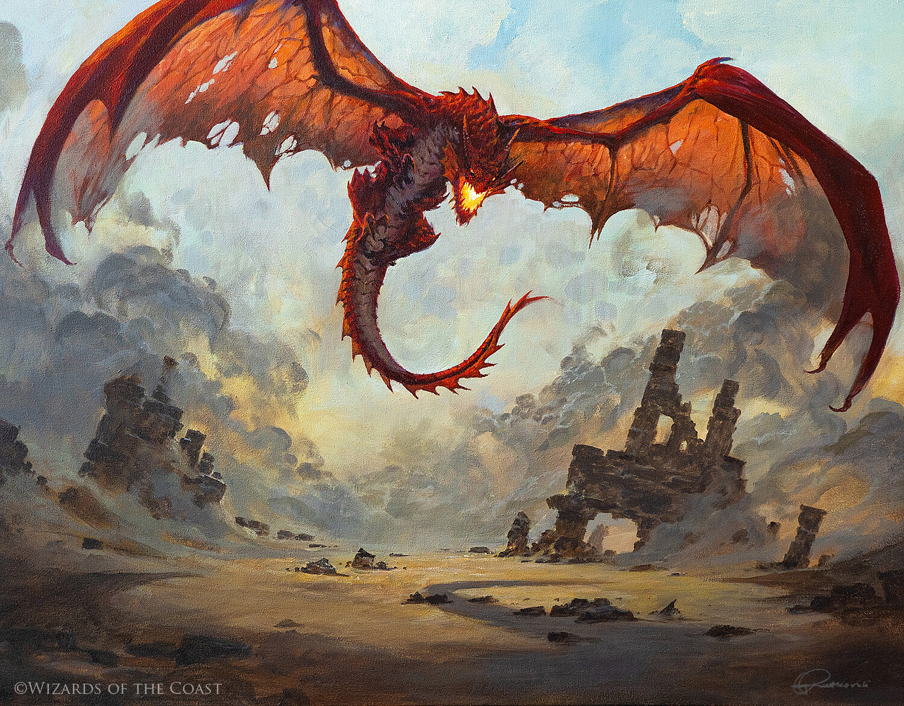
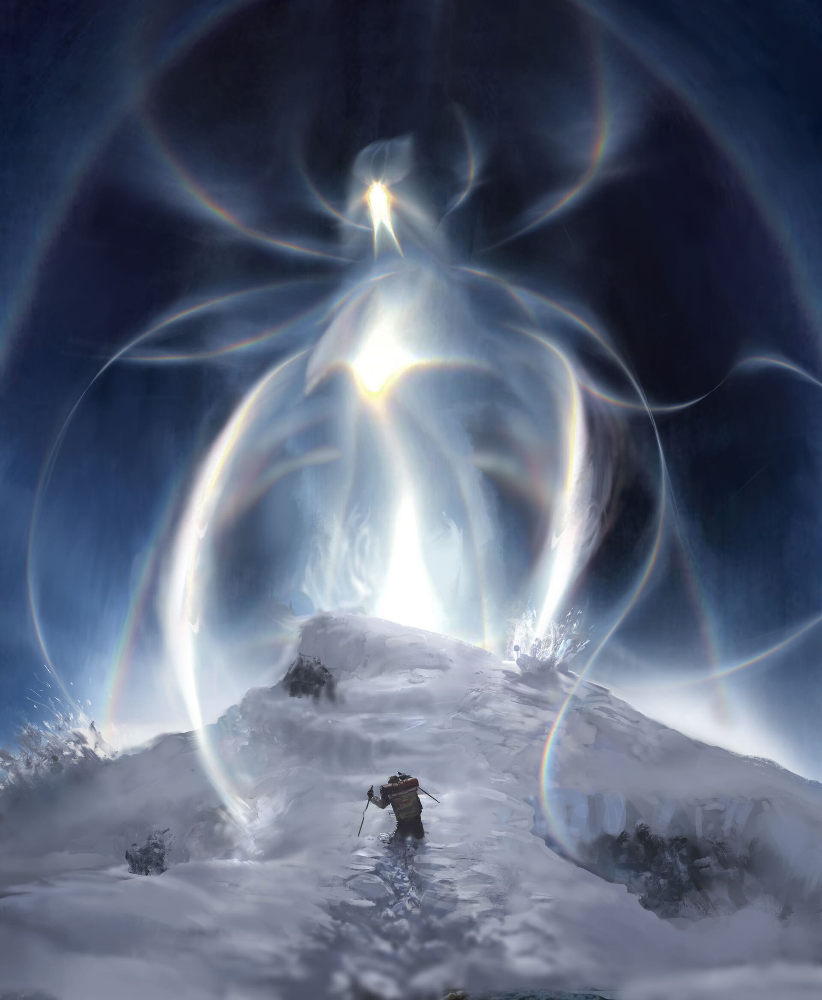

Elysium
Livro do Mundo

Gustavo Jordão
Sistema Elysium
v1.1.1.alfa
Créditos
- Desenvolvedores de Regras: Gustavo Jordão
- Ilustração de Capa: Gabriel Jordão
- Ilustradores do Livro:
Jogando o Jogo
- Desenvolvedores de Regras: Gustavo Jordão
- Ilustração de Capa: Gabriel Jordão
- Ilustradores do Livro:
Para jogar o Sistema Elysium, você precisará de alguns itens e informações essenciais:
- Livro de Regras: Este livro contém as regras principais para jogar, criar personagens, conduzir a história e realizar combates.
- Dados: Um conjunto de dados (d2 , d4 , d6 , d8 , d10 , d12 e d20 ), para a realização dos Testes e Ações dos personagens.
- Fichas de Personagem: Impressas ou digitais. Para registrar atributos, perícias, habilidades, equipamentos e anotações importantes dos personagens.
- Lápis e Borracha: Para anotar e atualizar informações durante o jogo.
- Jogadores: Um grupo de participantes, sendo um deles o Narrador, responsável por descrever ambiente onde a história ocorre, interpretar personagens não jogadores e arbitrar as regras.
- Imaginação e Vontade de se divertir: O mais importante é a disposição para criar histórias, interpretar personagens e viver aventuras únicas.
O Narrador
O papel do Narrador ao jogar o Sistema Elysium é conduzir a história, descrever cenários, interpretar os personagens que vão aparecer na história dos jogadores e arbitrar as regras do jogo. Cabe ao Narrador criar desafios, apresentar situações inesperadas, controlar o ritmo da narrativa e garantir que todos os jogadores tenham oportunidades de participar e se divertir. O Narrador deve ser imparcial, flexível e criativo, adaptando-se às escolhas dos jogadores e promovendo uma experiência envolvente e colaborativa para o grupo.
O Jogador
O papel do jogador é criar e interpretar um personagem dentro do universo do jogo. Cada jogador toma decisões, descreve ações e reage aos desafios apresentados pelo Narrador, buscando atingir objetivos pessoais e coletivos. O jogador deve contribuir para a narrativa e respeitar as regras estabelecidas, utilizando criatividade e interpretação para dar vida ao seu personagem e enriquecer a experiência de todos na mesa.
História

Elysium, Plano Material
Elysium é o plano material onde a maior parte das aventuras acontecem. Um mundo vasto e diversificado, repleto de diferentes regiões, culturas e criaturas. Desde as planícies abertas até as densas florestas, passando por desertos áridos e montanhas imponentes, Elysium oferece uma infinidade de ambientes para explorar e descobrir.
- Planícies
- Floresta, com bestas como javalis, cobras, e arvores frutíferas
- Pântano, com homens peixes, pessoas mortas no fundo do pântano, Pequena vila
- Floresta no pântano, com casa de bruxas
- Floresta Negra, com a clareira dos animais falantes no centro, com um portal para o plano das fadas
- Lugar Gelado ao Norte onde fica a Floresta Negra
- Praias, que são caminhos para a Cidade no fundo do mar
- Deserto com múmias, pirâmides, esfinges e oásis.
- Savana com Elefantes, Leões e Hienas.
- Grande Lago, com sereias
- Pequenos Lagos, com tesouros em seu fundo
- Montanhas, com anões, minas e minérios preciosos, tesouros enterrados, perigos no fundo da montanha
- Gelo no topo das Montanhas,
- Vulcões acima do gelo no topo das Montanhas, com um dragão ancestral
- Paredão de Montanhas
- Norte Gelado
- Depois do Norte é a Beira do Mundo
- Grandes Castelos com muralhas, com comercio, plantações a sua volta, palácios no centro
Personagens e Criaturas
Criando um Personagem
Criaturas, criadas pelo jogador e pelo narrador, possuem em sua ficha: espécie, individualidades e habilidades.
Ao criar um personagem, siga os passos abaixo:
- Escolha a Espécie: A espécie contribui para a aparência e traços inatos ao personagem. Também pode ajudar a construir o passado do personagem, mas não limite sua historia a isso.
- Escolha as Individualidades: As individualidades trazem originalidade ao personagem criando combinações únicas, elas definem a trajetória do personagem até o presente. Cultura de origem, Profissão, características físicas, boas e ruins.
- Distribua as Perícias: Pontos de pericia definem a forma atual do personagem e sua força para lidar com testes de desafios e embates.
- Descreva o Personagem: Crie uma breve história, descreva a aparência, personalidade e motivações para dar vida e profundidade ao personagem baseado nas escolhas anteriores.
Após o personagem estar pronto, você pode ele:
- Equipar: Escolha armas, ferramentas, equipamentos.
- Aprender: Assim como ferramentas, feitiços tem sua utilidade e podem ser usados para atacar, defender ou resolver problemas durante a aventura.
Com esses passos, seu personagem estará pronto para embarcar em aventuras no mundo de Palácio Caravana!
Espécie
A espécie define os traços inatos de uma criatura. A escolha da espécie influencia a aparência, capacidades físicas e mentais, bem como a interação com o ambiente e outras criaturas.
Cada Espécie possui um Tipo. O Tipo permite interações com o sistema, certas magias e efeitos. Além disso, algumas espécies possuem Subtipos, que representam variações dentro do tipo principal.
O Tamanho indica as dimensões físicas da criatura, influenciando sua movimentação, interação com o ambiente e efeitos de habilidades ou magias.
Essas informações são essenciais para determinar vantagens, desvantagens e regras específicas aplicáveis a cada espécie durante o jogo.
| Tipo | Descrição |
|---|---|
| Bestial | Criaturas peludas e com dentes proeminentes. |
| Constructo | Entidades artificiais compostos por matéria inorgânica, geralmente metais, pedras ou madeira. |
| Elemental | Seres formados por elementos naturais. |
| Etéreo | Entidades incorpóreas ou sobrenaturais. |
| Humanoide | Criaturas com forma humana ou similar. |
| Insectóide | Criaturas de anatomia insectóide. |
| Parasita | Criaturas que dependem de outros seres para sobreviver. |
| Réptil | Seres de natureza reptiliana. |
| Vegetal | Seres compostos por matéria vegetal. |
| Tamanho | Descrição |
|---|---|
| Minúsculo | Criaturas extremamente pequenas, como insetos ou pequenos roedores. Pode ocupar o espaço ocupar outra criatura de tamanho médio ou maior. |
| Pequeno | Criaturas menores que um humano adulto, como crianças, cachorros e gatos. Em combate ao se mover, pode atravessar um espaço ocupado por outra criatura media ou maior, mas não pode terminar seu movimento no mesmo espaço. |
| Médio | Tamanho padrão de humanos e criaturas similares. |
| Grande | Criaturas maiores que humanos, como ursos, elefantes, ogros e . |
| Gigante | Criaturas enormes ou gigantes como dragões. |
| Colossal | Criaturas de proporções titânicas, como . |
Anão
Humanoide
Pequeno
PV: 8
Movimentação: 5m
Os anões são conhecidos por sua robustez.
Pele Grossa - Reduz em 2 o dano de ataques perfurantes e cortantes.
Canis
Humanoide - Animale
Médio
PV: 8
Movimentação: 5m
Humanoide, características de cachorro, rabo peludo, orelhas caídas
Faro Aguçado - Recebe Vantagem em testes que envolvam o olfato.
Draco
Humanoide, Réptil - Dragão
Médio
PV: 8
Movimentação: 5m
Humanoide, características de dragão ou lagarto, pele escamada, cabeça de réptil
Resistência a Calor - Recebe metade de dano Ígneo.
Elfo
Humanoide - Elfo
Médio
PV: 8
Movimentação: 5m
Os elfos são conhecidos por sua beleza, longevidade e conexão com a natureza. Eles são habilidosos em magia e artesanato.
Felix
Humanoide - Animale
Médio
PV: 8
Movimentação: 5m
Humanoide, cabeça de gato, corpo peludo, garras afiadas.
Visão Noturna - Esta criatura não sofre desvantagens em testes envolvendo visão para ver dentro de um raio de 30 metros.
Goblin
Humanoide - Goblinoide
Pequeno
PV: 8
Movimentação: 5m
Os goblins são criaturas pequenas, ágeis e astutas, conhecidas por sua natureza travessa e engenhosidade. Vivem em grupos e frequentemente habitam áreas subterrâneas ou florestas densas.
Humano
Humanoide
Pequeno ou Médio
PV: 8
Movimentação: 5m
Os humanos são a espécie mais comum no plano de Elysium.
Orc
Humanoide - Orc
Médio ou Grande
PV: 8
Movimentação: 5m
Os orcs são conhecidos por sua força bruta, ferocidade em batalha e cultura tribal.
Replicante
Humanoide, Constructo
Médio
PV: 0
Movimentação: 5m
Os replicantes são seres artificiais. Eles possuem características humanoides, mas são feitos de materiais inorgânicos como ferro, pedra ou madeira.
Composição Rígida - Essa criatura possui Carapaça 16. Quando a Carapaça chegar a 0, a criatura fica Inconsciente. Carapaça pode ser restaurada com o material compatível.
Reptilia
Humanoide, Réptil
Médio
PV: 8
Movimentação: 5m
Humanoide, características de lagarto, pele escamada, cabeça de réptil
Folego - Pode segurar o folego por mais tempo.
Taurus
Humanoide - Animale
Médio ou Grande
PV: 8
Movimentação: 5m
Humanoide, Chifres na cabeça, grande, forte
Vulpix
Humanoide - Animale
Médio
PV: 8
Movimentação: 5m
Humanoide, cabeça de raposa, rabo peludo
Individualidades
Todo personagem possui traços únicos, características que o diferem dos outros. Seja alguma aptidão que possui desde quando nasceu, seja uma mutação genética, um interesse em uma área muito especifica, um tique que o atrapalha sua vida inteira, experiencias profissionais, costumes da terra natal, entre tantas outras. representa a história e as experiências passadas do personagem, moldando suas habilidades, conhecimentos e personalidade. Ele define o contexto social, cultural e profissional do personagem, influenciando suas motivações e objetivos dentro da narrativa. Elas ajudam a construir a identidade única do personagem
Artesão
Profissão
artesão do clã.
Atleta
Antecedente
Recebe a habilidade Velocista.
Bardo
Profissão
O Bardo é um contador de histórias e músico talentoso. Ele usa sua arte para inspirar e entreter.
Curandeiro
Profissão
Especializado em curar ferimentos e doenças, o Curandeiro possui experiencia em preservar a vida.
Estudioso
Antecedente
O Estudioso é um amante do conhecimento, sempre em busca de aprender mais sobre o mundo.
Explorador
Profissão
O Explorador é um aventureiro nato, sempre em busca de novas terras e desafios. Ele é habilidoso em navegação e sobrevivência em ambientes selvagens.
Faro Aguçado
Antecedente
Recebe Vantagem em testes que envolvam o olfato.
Fazendeiro
Profissão
Criado em uma fazenda, o Fazendeiro é experiente em lidar com a terra e os animais. Ele é forte e resistente, com habilidades práticas de sobrevivência.
Ladrão
Profissão
Hábil em furtos e escapadas, o Ladrão é astuto e ágil. Ele vive à margem da lei, mas possui um código próprio de ética.
Linguista
Profissão
Especializado em línguas e comunicação, o Linguista possui vasto conhecimento sobre idiomas antigos e modernos.
Escolha cinco línguas da tabela de Idiomas, você aprende elas.
Malandro
Antecedente
Crescido nas ruas, o Malandro é astuto e adaptável. Ele aprendeu a sobreviver em um ambiente hostil e possui habilidades de furtividade e improvisação.
Mente Afiada
Característica
Cabeção
Mercador
Profissão
O Mercador é astuto e persuasivo, sempre em busca de oportunidades para lucrar. Ele tem uma vasta rede de contatos e é habilidoso em negociações.
Nobre
Antecedente
Nascido em uma família de prestígio, o Nobre é educado e possui habilidades sociais refinadas. Ele tem acesso a recursos e influência, mas pode ser visto como arrogante por outros.
Paladar Aguçado
Antecedente
Recebe Vantagem em testes que envolvam o paladar.
Soldado
Profissão
Treinado para a guerra, o Soldado é disciplinado e leal. Ele possui habilidades de combate e estratégia, e é respeitado por sua bravura.
Atributos e Pericias
| Mundo das Ideias | ||
| Mente | Inteligência | Logica, Cálculos Matemáticos |
| Criptografia | Resolver quebra-cabeças, Aprender Linguagens novas ou entender sotaques e variantes de uma já conhecida, | |
| Conceito | Compreender o abstrato, Compreender conceitos complexos, Arte, Filosofia, Estimar valor | |
| Conhecimento | Recordar História, Recordar Fato | |
| Engenharia | Conhecimento de Ferramentas e Armas, Inteligência espacial | |
| Persona | Empatia | Compreensão interpessoal, Compreensão com animais |
| Lábia | Persuasão, Dramatização, Dissimulação | |
| Glamour | Charme, Sedução, Beleza, Atração | |
| Atitude | Intimidação | |
| Presença | Vontade | Fé, Coragem, Determinação |
| Sexto Sentido | Arcanismo, afinidade com o pós-vida | |
| Compostura | Foco, Concentração, Esconder emoções | |
| Disciplina | Autodomínio, Resiliência, Resistir a vícios e tentações | |
| Agilidade | Velocidade de movimento, Inteligência corporal | |
| Sentido | Intuição | Instinto |
| Equilibrio | Equilíbrio Físico, Acrobacia | |
| Coordenação | Coordenação Óculo Manual, Direção de veículos | |
| Percepção | Visão, Audição. Perceber o ambiente a sua volta. | |
| Tato | Mãos Leves, Habilidade Motora Fina, Analisar com o toque | |
| Corpo | Força | Força física |
| Saúde | Metabolismo, Resitencia a doenças e venenos | |
| Tenacidade | Resistência a dor, Segurar o folego, Resistir a exaustão | |
| Mundo Material | ||
A tabela de Atributos e Perícias lista as aptidões de uma critatura, tanto no âmbito mental quanto no físico e em todo o espectro entre eles.
Cada Atributo está relacionado a uma área do indivíduo e representa sua habilidade em tal área de forma generalista.
Cada Perícia envolve um conjunto de palavras-chave que remetem os desafios mais específicos em que elas devem ser utilizadas.
Mente
ara cada ponto em Mente, nada acontece.
Persona
Para cada ponto em Persona, nada acontece.
Presença
Para cada ponto em presença, nada acontece.
Sentido
Ao rolar iniciativa, adicione um bônus de +3 para cada ponto em Sentido.
Ao Proteger-se, receba modificadores igual a quantidade de atributos em Sentido.
Corpo
Para cada ponto em Corpo, aumente seus PV em +3.
Teste de Perícia
Para realizar certas Ações que representem um desafio, por menor que ele seja, é necessário realizar um Teste de Perícia para determinar seu sucesso, sendo esse um Desafio comum ou um Embate. Um Teste de Perícia sempre requer a soma de duas Perícias distintas, podendo haver modificadores oriundos de Itens, Bênçãos, Maldiçoes, Efeitos de Terreno ou outras fontes:
Resultado = Dado1 + Atributo1 + Pericia1 + Dado2 + Atributo2 + Pericia2 + Modificadores
As combinações de perícias utilizadas nos testes são determinadas na descrição de cada Ação, sendo ilustrada a exigência na descrição da ação, com um símbolo de + (mais).
Se uma Ação não estiver uma prevista neste livro e haver duvida sobre as Pericias a serem utilizadas, elas serão escolhidas pelo Narrador.
Modificadores
Os modificadores representam fatores extra personagem no momento de um Teste.
Equipamentos, ferramentas, bênçãos ou outros fatores podem gerar modificadores positivos, auxiliando o personagem a realizar a ação desejada com melhores resultados.
Doenças, machucados, maldições, condições ou outros fatores já geram o resultado oposto, prejudicando o personagem a realizar as ações desejadas com sucesso.
Os desafios que utilizam a lista de Nível de Dificuldade são aqueles que não disputam contra as perícias de outra criatura, sendo sua dificuldade determinada pelo Narrador. Levantar um objeto muito pesado, Tentar manter-se imóvel ou Decifrar um pergaminho são desafios que dependem apenas da perícia da criatura para seu sucesso, então utilizam o Nível de Dificuldade para determinar a dificuldade.
Níveis de Dificuldade
| Dificuldade | Resultado | Descrição |
|---|---|---|
| Sucesso Automático | 6 em ambos os dados | A Sorte alinhou os caminhos para seu sucesso. O resultado do teste gera um sucesso automático no teste e talvez de mais vantagens do que previsto. |
| Falha Automática | 1 em ambos os dados | A Sorte não estava ao seu lado. O resultado do Teste pode gerar uma falha ou uma consequência desastrosa, cabe ao Narrador a melhor interpretação. |
| Rotineira | 7 | Tarefa trivial. Nível de dificuldade mínimo, mas requer atenção. |
| Fácil | 9 | Exige um pouco de preparo, mas pode ser realizado por um iniciante no assunto. |
| Mediana | 11 | Testa habilidades medianas. |
| Desafiadora | 13 | Um obstáculo notável, exige talento real. |
| Difícil | 18 | Uma tarefa complicada. |
| Muito Difícil | 21 | Para especialistas ou sorte excepcional. |
“Vocês são pegos de surpresa pelo terremoto. Todos façam um teste de Compostura com Agilidade para manterem o equilíbrio e não caírem no chão.”
“No pedaço de papel você vê um texto escrito a caneta. Letras e símbolos, se misturam formando um texto criptografado. Para tentar decifrar até o amanhecer, role um teste de Criptografia mais Criatividade.
Embate
Um Embate ocorre quando uma Ação é declarada, mas seu resultado encontra resistência de outra criatura, seja ela um personagem do Narrador ou de outro Jogador, assim, as duas criaturas rolam um Teste de Perícia, quem possuir o resultado maior vence o embate, realizando com sucesso sua ação ou resistindo a ação da outra criatura.
Em caso de empate, ganha quem estiver realizando ativamente a ação, ou seja, quem realiza o ataque ganha de quem esta defendendo, assim como quem procura um objeto em um cômodo acha de quem o escondeu.
“Quero domar este cavalo selvagem.”
“Ok, faça um teste de Empatia e Compostura. O cavalo vai tentar resistir com Vontade e Compostura.”
Ações
Um personagem esta a todo momento realizando ações, movendo-se, percebendo o ambiente, lutando, prendendo. Algumas dessas ações representam um nível de desafio alto e precisa passar por um Teste de Pericia para medir o quão bem a ação foi realizada. Criaturas podem realizar ações que não estão previstas nessas opções. Habilidades podem oferecem outras alternativas de ação adicionais e você pode improvisar outras. Quando uma ação não esta prevista no manual, o Narrador decide se a ação é viável e quais pericias devem ser usadas nos testes.
Ajudar
Você pode ajuda uma criatura a realizar uma ação. Descreva como você poderia ajudar no teste, se a descrição for coerente faça o mesmo Teste de Pericia utilizado pela Criatura ajudada, ela pode escolher substituir o resultado dos seus dados pelos dela. A criatura ajudada escolhe se utiliza o modificador bônus dela ou seu.
Consumir Item
Itens consumíveis são aqueles que só podem ser usado uma determinado numero de vezes antes de perder seu propósito inicial.
Uma poção de cura, após bebida, deixa para trás apenas o frasco vazio. Um amuleto de proteção pode ter seu efeito ativado apenas algumas vezes antes de perder seu encanto e se tornar um simples ornamento.
Entrar em Pose
Entrar em pose quer dizer que você se preparou para uma situação ou esta preparado para reagir a um evento. Enquanto alguém esta em uma pose, pode por exemplo, receber modificadores positivos em determinados testes ou preparar uma reação especifica da pose a um evento descrito nela.
Uma pose é desfeita quando o personagem entra em uma nova pose ou se movimenta. Apenas uma Pose pode permanecer por vez.
Reação
Uma Reação é uma ação que pode ser realizada fora do seu turno, em resposta a um evento específico. Quando você declara uma Reação, ela é colocada em uma fila de execução. As Reações são resolvidas em ordem inversa à declaração: a última Reação declarada é executada primeiro, e a primeira declarada é executada por último. Isso cria um efeito em cascata onde ações posteriores podem interferir ou anular ações anteriores. Por exemplo, se um ataque é realizado e três personagens declaram Reações para intervir, a terceira Reação declarada será resolvida primeiro, podendo alterar ou bloquear o alvo antes que a segunda e primeira Reações sejam executadas.
Mover
Uma criatura pode se mover em um turno uma distância igual sua Movimentação.
Em caso de varias Ações serem declaradas sequencialmente no mesmo Turno, a ultima Ação declarada é realizada primeiro. Por exemplo, se um golpe é realizado e três jogadores declaram que querem intervir no ataque, seja utilizando escudos, feitiços ou outros ataques, aquele que declarou o movimento primeiro, será o primeiro a ter ele realizado.
Conjuração
Conjuração é uma ação que permite lançar um Feitiço através do conhecimento de seu personagem ou de objetos mágicos como pergaminhos e itens encantados.
Para conjurar um feitiço, você deve entrar em uma Pose de Conjuração. Enquanto estiver nesta pose, você está canalizando a magia necessária para lançar o feitiço e deve mantê-la pelo tempo descrito na descrição do feitiço. Se a Pose de Conjuração for interrompida antes de você terminar a conjuração, o feitiço falha automaticamente.
Se um feitiço descrever uma postura específica, como "aponte os dois braços para frente com as palmas abertas" ou "junte as mãos em pose de oração", tente realizá-la. Se não conseguir porque seus braços estão amarrados ou é impossível juntar as mãos, você não poderá conjurar. No entanto, deficiências físicas não impedem a conjuração, pois a magia reside na intenção.
Feitiços pede componente Material precisam dos ingredientes descritos para serem conjurados. Todos os materiais necessários serão consumidos no início da conjuração. Se o feitiço estiver em um Pergaminho, este também será consumido como material.
Feitiços com componente Verbal são expressivos. Se deseja o dano máximo, grite. Se deseja sutileza ou dano não letal, sussurre. A impossibilidade de falar impede a conjuração.
Feitiços com componente Foco precisam de um objeto específico para iniciar a conjuração, mencionado na descrição do feitiço. O foco não é consumido. Ele pode ser um medalhão, um cajado ou uma espada.
Movimentação, Distância Absoluta e Distância Relativa
A movimentação representa a capacidade de uma criatura de se deslocar. No seu turno, você pode se move a uma distância igual a sua Movimentação. Mover não consome ◆, permitindo que o personagem combine deslocamento com outras ações em seu turno.
Durante a movimentação, você pode atravessar o espaço de um aliado. Você não pode encerrar sua movimentação em um espaço ocupado por outra criatura.
Distância Absoluta
O combate narrado com Distância Absoluta, utiliza os valores presentes na ficha das criaturas e da descrição das ações para medir distancias e calcular a movimentação. Este tipo de combate precisa de um campo de batalha com as marcações das distancias, marcadores, representando personagens, obstáculos, objetos e réguas, para medir a distância de disparos de projeteis e área de efeito de explosões e feitiços.
Distância Relativa
Em vez de medir cada metro exato durante o combate, utiliza-se o conceito de Distância Relativa para simplificar o combate e não ficar preso ao campo de batalha e aos marcadores. Para essa distância, define-se que um corredor mediano alcance 30 metros de movimentação em um turno. Essa criatura não possui bônus ou bênçãos que ajudem ela a correr distâncias maiores. As tipos são:
- Corpo a Corpo/Ao seu lado: Adjacente. Alcance de toque e ataques corpo a corpo. 5 metros ou menos, aproximadamente.
- Perto: Próximo, mas não a distância de toque ou ataques corpo a corpo. Possível alcançar com uma movimentação curta.
- Longe: Distância que exige uma movimentação completa de um corredor mediano para alcançar. Entre 25 a 35 metros, aproximadamente.
- Muito Longe: Distância em que não é possível alcançar em um turno de um corredor mediano, utilizando a movimentação completa.
- Fora de Alcance: Distância que exige múltiplas ações de movimento para alcançar.
Tipos de Movimentação, Penalização de Movimentação e Terreno Difícil
Seu movimento pode ser feito de outras formas como escalar, nadar, rastejar, entre outras formas para se locomover, essa movimentação alterada não é tão eficiente quando a movimentação padrão, resultando em uma Penalização de Movimentação quando utilizados. O mesmo ocorre quando um personagem tenta se locomover por um Terreno Difícil. Entulhos, escadas íngremes, tetos baixos, neve, pântanos rasos e vegetação densa são exemplos de terrenos difíceis.
Cada metro deslocado quando um criatura sofre Penalização de Movimentação, custa o dobro da distância percorrida. A penalização de Movimentação não se acumula.
Combate
O combate é o uma instancia especial em que criaturas entram em confronto direto. Durante o combate, as regras de rodadas, turnos e ações são aplicadas para organizar as decisões e ações de cada participante.
Atacar
Um ataque segue a seguinte estrutura:
- Escolha um alvo dentro da distância do seu ataque, podendo ser uma criatura, objeto ou local.
- Realize um Embate, em caso de vitória ou empate, você aplica o dano e os efeitos especiais do ataque.
- Em caso de um acerto critico, o Embate é ganho automaticamente pelo atacante, o dano é dobrado e ignora reduções (como de armadura).
Se você não possuir armas equipadas e realizar um ataque, utilizará os punhos.
Rodada, Turnos e Fases
O combate acontece em ciclos de Rodadas e Turnos. Cada rodada corresponde a aproximadamente 6 segundos do jogo, e em cada Rodada, uma criatura no combate realiza seu turno. Quando todos os turnos terminarem, uma nova Rodada se inicia até a batalha cessar.
Um Turno é composto por Fases. As Fases servem para engatilhar eventos
- Fase Inicial: São acionados os eventos que mencionam "no inicio do turno".
- Fase de Ação: Momento em que o personagem pode realizar Ações e usar sua Movimentação.
- Fase Final: São acionados os eventos que mencionam "no fim do turno".
Ordem de Ação
A ordem dos Turnos é determinada no início do combate, as criaturas com mais pontos em sentidos agem primeiro. Em caso de empate, o Narrador decide a ordem entre os empatados.
Ponto de Ação
Pontos de Ação são representados por ◆. Pontos de Ação representam o tempo consumido para realizar uma Ação dentro de um Turno enquanto estão em Combate.
Ações, possuem em sua descrição o custo necessário para ser utilizados quando em Combate.
Ao inicio do turno de cada criatura, todos os ◆ remanescentes dela são descartados e então recupera-se ◆ igual seu limite máximo.
Ações, com exceção de Conjurações, acumulam ◆ investidos, ou seja, se a Ação de Arrombar Fechadura precisar de 10◆ para ser realizada e você possui apenas 5◆ a cada turno, em um Turno você pode gastar 5◆ para realizar a ação, no turno seguinte atacar e por fim, no ultimo turno, gastar mais 5◆ completar o arrombamento.
Ações Livres e Outras Ações
Ações Livres não necessitam de ◆ para serem realizadas podem ser feita enquanto a criatura realiza uma ação, como atacar.
Exemplo de ações livres são:
Falar
Durante o combate, você pode se comunicar brevemente com outra criatura através de diálogos ou gestos.
Preparar-se
Você pode transformar uma Ação em uma Reação.
PrepararDeclare uma Ação, pague seu custo necessário e descreva um evento para desencadear a realização esta Ação. Entre em pose de Preparado, enquanto estiver nesta pose e quando o evento descrito ocorrer, realize a Ação.
Interagir com objetos
Você pode interagir com um objetos ou elementos do ambiente. Se na descrição do objeto não houver um custo para realizar a ação desejada, gaste ◆ para realizar a ação.
Golpe desarmado
Atacar - 5 metros◆◆: Cause 2 de dano Contundente.
Proteger-se
Se você não possuir um escudo equipado e quiser se proteger, você pode entrar em pose de Esquiva.
Esquivar◆◆: Entre em pose de Esquiva. O próximo Ataque que você sofrer recebera -5 e esta pose é desfeita.
Equipamento
Desequipar equipamento◆: Guarde o na bolsa ou deixe-o no chão a 5 metros e você.
Agachar/Se jogar
Você pode se agachar ou se jogar no chão para se proteger de ataques, ou para se esconder.
Equipamentos
Texto:
- Capacete
- Armadura
- Luva direita
- Luva esquerda
- Botas
- Arma Mão Direita
- Arma Mão Esquerda
- Arma Duas Mãos
- No máximo um colar mágico ativo
- No máximo um anel mágico ativo para cada mão
Armas definem o tipo de dano e a forma como o personagem vai atacar, armaduras e escudos reduzem o dano recebido e outros equipamentos oferecem vantagens aos personagens durante as aventuras.
As raridades de um item são:
| Raridade | Descrição |
|---|---|
| Comum | Encontrado facilmente em uma aventura, amplamente encontrados no mundo, de fabricação simples ou produzidos em massa. |
| Incomum | Itens um pouco mais difíceis de encontrar, geralmente exigem materiais melhores ou algum nível de conhecimento especializado para criar. |
| Raro | Itens de grande valor e poder, muitas vezes com origens mágicas, tecnológicas ou lendárias. |
| Lendário | Artefatos únicos, cercados de histórias, tendo sua origem em eventos extraordinários. |
Corpo a Corpo
Espada
Espada - Comum - 1 mão
Atacar - 5 metros
◆◆◆: Cause 5 de dano Cortante.
Lança
Lança - Comum - 2 mãos
Atacar - 15 metros
◆◆◆: Cause 5 de dano Perfurante.
Martelo
Martelo - Comum - 1 mão
Atacar - 5 metros
◆◆◆: Cause 4 de dano Contundente. Se a diferença entre os embate for 5 ou maior, o alvo recebe Atordoado até o fim do turno dele.
Rapieira
Espada - Comum - 1 mão
Uma espada leve e afiada, ideal para ataques rápidos e precisos.
O ataque com esta arma também é critico se o resultado do teste de ataque for 11.
Atacar - 5 metros
◆◆: Cause 3 de dano Perfurante.
A Distância
Arco
Arco - Comum - 2 mãos
Atacar - 30 metros
◆◆◆, 1 Flecha: Cause 5 de dano Perfurante.
Besta
Besta - Comum - 1 mão
Carregar Dardo
◆◆◆, 1 Dardo: Carregue o dardo na besta. Seu dardo se torna um Dardo Carregado. Só pode haver um dardo carregado por besta.
Atacar - 60 metros
◆◆◆, 1 Dardo Carregado: Cause 7 de dano Perfurante.
Vestimenta
Armadura de Couro
Armadura - Comum
None
Reduz o dano perfurante, cortante e contundente sofrido em 2.
Armadura de Ferro
Armadura - Comum
Reduz o dano perfurante, cortante e contundente sofrido em 3.
Escudo Pequeno
Escudo - Comum
Escudo pequeno e leve feito de madeira. Ideal para aparar golpes sem perder velocidade.
Defender
◆◆: Entre em Pose Defensiva, +5 em Testes de Pericia quem envolvam Ataques contra você.
Consumíveis
Fogo Vivo
Consumível - Comum
Um frasco de vidro espesso contendo um liquido verde opaco florescente de cheiro forte.
Arremessar - 30 metros
◆◆:
O frasco se rompe e explode ao contato. A um raio de 10 metros do ponto de impacto criaturas sofrem 10 de dano Ígneo e objetos inflamáveis são incendiados.
Poção Abraço Caloroso
Consumível - Comum
Consumir - ◆◆: Receba Resistência a Gélido por 1 hora.
Poção de Cura
Consumível - Comum
Consumir - ◆◆: Recupere 5 Pontos de Vida
Poção de Resistência a Fogo
Consumível - Comum
Consumir - ◆◆: Receba Resistência a Fogo por 1 hora.
Artefatos
O Grande Olho
Artefato - Raro
None
O Sol Artificial de Drana Velora
Artefato - Lendário
None
Glifos
Equipamentos e artefatos podem ser encantados com Glifos. Glifos possuem efeitos diversos. Um item pode possuir uma quantidade de Glifos até igual a quantidade máxima de espaços de Glifos que aquele item possuí.
Proteção
None
Materiais
Os materiais são substâncias usadas para criar equipamentos, armas e outros itens no mundo de Elysium. Eles podem variar em raridade, propriedades e utilidade.
Camoliaz
Vegetal - Comum
A Camoliaz é uma planta comum encontrada em várias regiões, conhecida por suas folhas largas e flores vibrantes. É frequentemente utilizada em chás e remédios naturais devido às suas propriedades calmantes.
Erva Sangue de Dragão
Vegetal - Incomum
Planta rara com propriedades mágicas, usada em poções e encantamentos.
Pedra Caixão
Mineral - Incomum
Cristal conhecido por sua coloração azul a verde-azulada, Pedra Caixão pode ser encontrada em restos mortais em decomposição.
Habilidades
Habilidades são capacidades especiais que uma criatura pode possuir, representando talentos, poderes ou aptidões únicas que a diferenciam das demais. Elas podem ser adquiridas por meio de treinamento, experiência, herança genética ou eventos extraordinários. Habilidades podem influenciar diversos aspectos do jogo, desde o combate até a interação social e a resolução de desafios.
Calmaria antes da Tempestade
◆◆: Entre na pose Plenitude e finalize seu turno, esta pose é desfeita se você usar uma ação. Após o inicio de seu próximo turno, quando Plenitude é desfeita receba ◆◆◆. Estes pontos de ação não contam para seu limite máximo.
Desembainhar Rápido
Seu primeiro golpe com uma Katana enquanto em combate causa 10 de dano cortante adicional.
Faro Aguçado
Recebe +2 em testes de Percepção baseados em olfato.
Flecha Dupla
Quando você escolher uma Criatura Alvo para sofrer um Ataque com Arco, consuma um Projétil a mais para Atacar outra Criatura além da primeira. Utilize o mesmo resultado do Ataque para os dois Alvos.
Golpe Abrangente
Sua perícia com armas permite ataques mais amplos. Ao realizar um ataque com uma espada ou um machado, você pode atacar mais outro alvo que esteja dentro do seu alcance de ataque e adjacentes ao alvo primário.
Gravidade é uma Mentira
Você recebe a habilidade Voo/Levitação.
Interceptar Projétil
Com uma espada, bloqueie e destrua um projétil que passe a uma distancia de 5 metros de você.
Levitação
use sua movimentação para se mover verticalmente. Ao se tornar inconsciente, você cai no chão
Parede de Vento
Você pode usar essa ação como uma reação.
◆◆: Crie uma barreira de vento. A barreira ocupa uma linha reta de até 15 metros de largura. Projeteis tem sua trajetoria interrompida e são destruidos ao contato com a barreira.
Planar
Você pode desacelerar a velocidade de sua queda.
Punhos Fortes
Se sua última ação neste turno foi um Ataque Desarmado, seu próximo Ataque Desarmado se chama "Ataque Desarmado Direto" e causa o dobro do dano.
Punhos Ágeis
Se sua última ação neste turno foi um Ataque Desarmado, seu próximo Ataque Desarmado custa ◆.
Saque Rápido
Se não possuir uma arma equipada, você pode equipar uma Arma Leve sem pagar seu custo de ação.
Velocista
Você é um Velocista, sua habilidade de acelerar rapidamente o torna um competidor formidável em qualquer corrida.
Sua a movimentação máxima aumenta em +10 metros.
Criaturas
Basilisco
Réptil - Gigante
None
Chocobo
Bestial - Médio
None
Dragão Vermelho
Réptil - Gigante
None
Fênix
-
Grifo
Bestial - Gigante
None
Hidra
-
Humano
Humanoide - Médio
Humanos são a raça mais abundante de todo o mundo.
Solidão
Etéreo - Gigante
Só torna forma quando distante 500m de 2 criaturas ou mais.
Sutileza
Elemental, Etéreo - Gigante
None
Voo/Levitação
Forma da Água
Jogue um d6, essa criatura recebe os seguintes benefícios:
Warawara

Etéreo - Minúsculo
Os Warawara são criaturas que habitam as florestas densas e úmidas.
Voo/Levitação
Língua
Brimarin
Língua dos Elfos. Delicada e fluida.
Cantare
Língua falada pelo povo Lunare. Entoando vogais como canto, é extremamente difícil de ser falada por seres não Lunare, embora possa ser compreendida.
Língua Comum
Língua amplamente utilizada para comunicação entre diferentes raças. Boa para fins comerciais e diplomáticos.
Língua Secreta dos Gatos
Língua dos Felix e Gatos. Usada em reuniões intimas. É um tabu ensinar a língua para outros pelo medo de terem sua segurança e seus segredos revelados. Não possui escrita.
Língua dos Ratos
Língua dos ladroes e espiões. Parecida com a língua comum, aos que não conhecem pode passar por uma linguagem coberta de gírias, mas possui termos e palavras com duplos sentido que permitem uma comunicação subliminar entre os que sabem.
Moroar
Língua dos Orcs. Gutural e ríspida.
Taka
Língua dos Goblins. Simples, usa de muitas vogais e sons agudos.
Facções
Como não tem emprego, as pessoas se aliam a facção
Academia de Artes Marciais
mestres para compartilhar conhecimento, espaço para prática.
Academia de Magia
Grandes bibliotecas de estudos, espaços e equipamentos para experimentação.
Bibliotecários
historiadores.
Os Ciganos
Conhecimento paranormal, passado de geração em geração através das historias de seu povo.
Guilda dos Ladrões
Eles produzem cofres, arrombam cofres, são furtivos e podem trabalhar como seguranças.
Sistema Unificado de Saúde
acesso facilitado a tratamento de doenças, recursos para estudos .
Tipos de Dano
Os tipos de dano representam as diferentes formas pelas quais uma criatura pode sofrer ferimentos ou efeitos negativos durante o jogo. Cada tipo de dano pode interagir de maneira distinta com resistências, vulnerabilidades e habilidades especiais das criaturas. Conhecer o tipo de dano causado por armas, magias ou efeitos é fundamental para determinar o impacto de ataques e eventos no jogo.
Ataques ou eventos podem causar danos de vários tipos ao mesmo tempo. o dano final representa a soma de todo esse dano realizado por um ataque ou evento.
| Supertipo | Descrição | Tipo de Dano | Descrição |
|---|---|---|---|
| Físico | Diminuído passivamente com proteções físicas como armaduras. | Contundente | Queda, impacto, Esmagamento |
| Cortante | Afiado | ||
| Perfurante | Perfuração | ||
| Elemental | Mitigado de forma mais ativa. Precisa de energia para combater. | Elétrico | Eletricidade, Raios |
| Ígneo | Fogo, Calor | ||
| Radiante | Divino, Energia Celeste, Energia Extraterrena, Radioatividade | ||
| Corrosivo | Ácido | ||
| Psíquico | Afeta a psique do indivíduo, podendo ser causado por loucura, alucinações, apatia. Não deixe as portas de sua mente abertas, uma vez o inimigo dentro, é difícil de tirar. | ||
| Venenoso | Substância prejudicial ao indivíduo. |
Resistências e Imunidades
Resistências representam a capacidade de uma criatura de suportar ou reduzir os efeitos negativos de certos tipos de dano, condições ambientais ou efeitos mágicos. Uma criatura resistente pode ignorar, reduzir ou anular penalidades e danos associados ao tipo de resistência que possui. Resistências podem ser adquiridas por meio de espécies, habilidades, equipamentos ou efeitos mágicos.
Condições são estados que afetam as criaturas durante o jogo, alterando suas capacidades, ações ou sofrendo efeitos negativos. Elas podem ser causadas por habilidades, magias, ataques, ambientes ou outros eventos. Cada condição possui regras específicas que determinam como ela afeta a criatura e como pode ser removida.
| Resistência | Descrição |
|---|---|
| Resistência a Calor | Recebe metade de dano Ígneo. |
| Resistência a Corrosão | - |
| Resistência a Frio | Não sofre as penalidades de eventos que possuam a propriedade Frio. |
| Resistência a Radiante | - |
| Carapaça X | Ao sofrer dano, ao invés de reduzir os PV da criatura, reduza os Pontos de Carapaça. Pontos de Carapaça são acumulativos e podem ser restaurados até o valor máximo de X, quando há o reparo do material ou criatura danificada. |
| Imunidade | Descrição |
|---|---|
| Imunidade a Calor | Ignora o dano Ígneo. |
Condições
Aqui estão algumas condições comuns. Condições que não estão presentes nesta lista, possuirão sua descrição mais detalhada na descrição do evento que a produzem.
| Condição | Descrição |
|---|---|
| Atordoado | A criatura atordoada possui dificuldade perceber o ambiente a sua volta e manter seus pensamentos
coerentes. Após realizar um Teste, jogue um d2, se o resultado for 1, receba -10 no resultado de testes realizados que envolvam perceber o ambiente a sua volta e manter pensamentos coerentes. Ao final do turno da criatura, ela rola um d10 |
| Cego | Uma criatura Cega não pode realizar ações que envolvam a visão e falham automaticamente em qualquer teste que envolva a visão. |
| Ensurdecido | Uma criatura Ensurdecida não pode realizar ações que envolvam a audição e falham automaticamente em qualquer teste que envolva a audição. |
| Inconsciente | Uma criatura Inconsciente é considerada Cega, Ensurdecida e Paralisada e recebe todos os efeitos
dessas condições, além de não conseguir realizar ações. Deixa cair o que quer que esteja segurando. Ao participar de um embate, o resultado é automaticamente 0. |
| Paralisado | Uma criatura Paralisada não pode se movimentar, além de não poder realizar ações que envolvam a testes físicos e falham automaticamente em testes que envolvam testes físicos. |
| Sangrando | Ao final de seu turno, perca 5 PV e realize um Teste de Resistência + Vigor, se o resultado for maior que 5, esta condição é removida. |
Feitiços
Ataque Trovejante
Eletricidade percorre seu corpo, dobre sua velocidade de movimento ate o final de seu turno. Durante a duração do feitiço você pode realizar Ataque Trovejante.
Ataque Trovejante - Realize um ataque desarmado, cause dano elétrico.
Contra Feitiço
Interrompa a conjuração de um feitiço.
Finito
Contra Verbo
Interrompa a conjuração de um feitiço que possua componente verbal.
Frin Limitare
Correntes Etéreas
Escolha uma criatura. Você e ela realizam um Embate de vontade, determinação ou arcadismo. Se ela perder, correntes translúcidas e intangíveis ligam ela a você, impedindo que ela se desloque alem de 30 metros de você.
Dança da Chuva
None
Estrelas Cadente
None
Atenem Flux
Fluxo de Pensamento
None
Imagem Espelhada
Escolha em até 5 aliados, a aparência de cada aliado se torna igual a sua por até um dia.
Crucifa Expergite
Julgamento Racial
Escolha um tipo de criatura. Toda criatura que não seja do tipo escolhido dentro de um raio de 100 metros recebe um ferrão negro que flutua acima de sua cabeça. No início do turno de cada criatura, o ferrão realiza um Embate contra a criatura, se o ferrão ganhar, cause dano igual a vida restante da criatura.
Leratia
Ler Pensamentos
Só funciona tocando na cabeça, perto do cérebro.
Nuvem Toxica
None
Parede de Espinhos
None
Parede de Fogo
None
Parede de Gelo
None
Passo Sombrio
Encoste em uma superfície como o chão, parede ou móveis, voce se mescla com as sombras e pode se mover pela parede.
Lebre Movitare
Passos leves
None
Ig
Pó de Brasa
Pressione o material entre a palma das mãos. Ao fim da conjuração você obtêm Punhado de Pô de Brasa.
Ritual da Fuligem
None
Visão Noturna
None